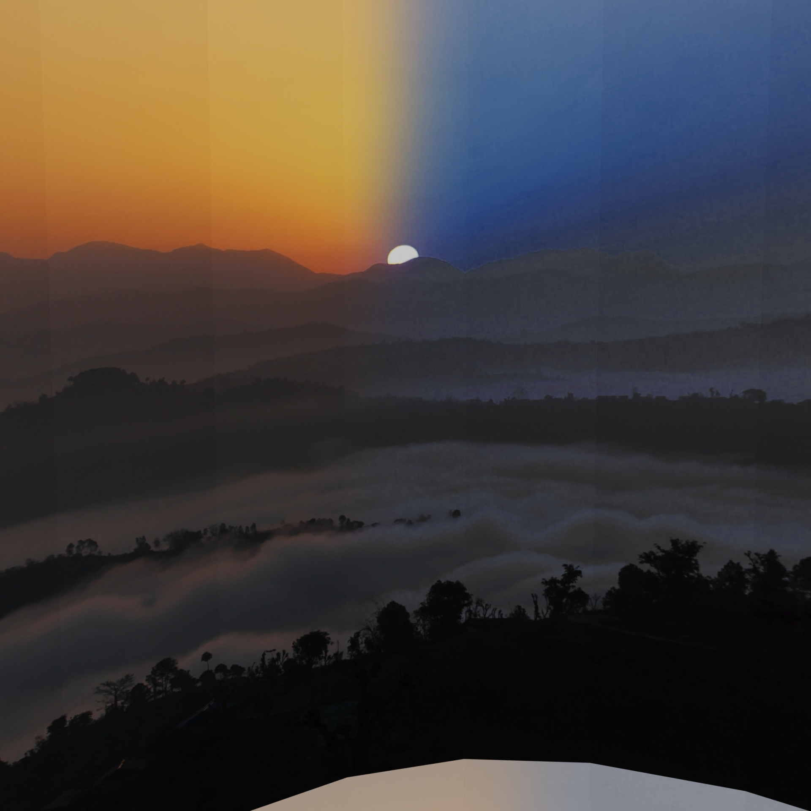
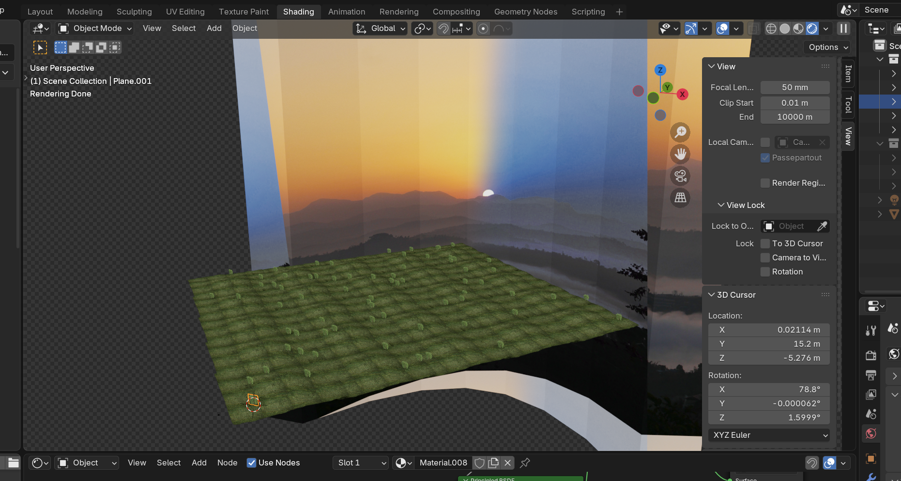
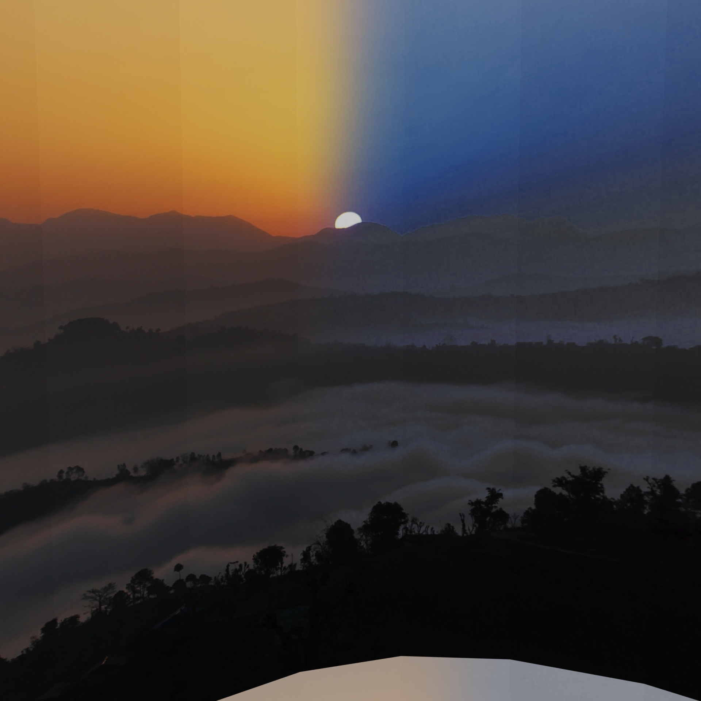
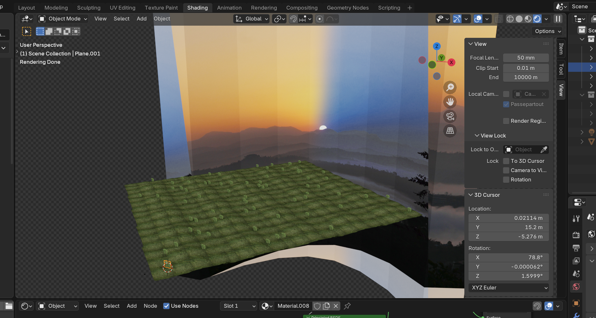

Memory Glade
I'd like to think that a computer's digital dreams are hidden;
nestled deep within the silicon impurities of its weary transistors,
and between the sectors of rotted bits belonging to the forgotten
text files of an old hard-drive platter...
What then, I wonder, would computers dream about...
Hey! It's been a while...
Sorry it's taken so goddamn long to finish this project, I really hope you like it!
I wanted to write about the album prior to releasing it to decompress and look back at
all of the work and scrapped ideas that have gone into its creation. I'd like to say it
came easy, that I was in "development heaven"
and
I was bursting with creativity for
the better part of 3 years, but it was definitely not.
If you just want a bit about each song on the released version and some BTS, skip to
Daydream Automata otherwise, I'll go over some scrapped
ideas now :)
>Orbit
Originally, before Daydream, when all the dust had settled from my previous releases (Faded Horizons & An End of
Sorts)
and I was left with this pile of strewn together songs, I attached to it an idea i'd had for a while
-
a "dual sided" album that is part Daytime and Nighttime, "Orbit".
Most a good portion of songs from Orbit made it to DDA, and so this was more transitionary than
anything
else. I also got from this the "so retro" vibe that would eventually comprise DDAs whole visual
aesthetic,
trying to emulate the PS2's low-poly, billboarded graphics and boxy skyboxes. I eventually got what
I
wanted
from tinkering in blender:

 





I even made a few music videos with the older iterations of the songs, like this one, for "Castillo Del Sol" (which would become BOOTLOADER):
Here are a couple of the scrapped songs that didn't make it to release, which is not to say they won't be released in an official capacity some time later!
Daydream Automata
Daydream Automata is a love letter to all days of my childhood, where I would spend messing with
every font
in Windows 98 Wordpad, and playing with a copy of Netscpe Navigator that wasn't even connected to
the internet most of the time.
It's also just a compilation of the many moments from my life that have happened during its
creation,
big or small, scary or joyful, listening back on this album feels like a time capsule of my young
adult life.
2 stages - title capitaliiz/length - videos - shaperbox - 1010 - first created
Tracklist
-
BOOTLOADER
Working Titles: bliss_three, Castillo Del Sol
First Created: Feb 2024Inspired by sunset express {to eternal bliss} by bliss3three, this song originally was a burst of creative energy in one day that ended up being about 1:30 and pretty well off to stand alone. It's the first song I ever made that utilizes the chopped up Amen Break beat, and layered with the bright synths and stuttering chords, it fits well. Eventaually I added a B section after finding some new synth patches that are reminicent of the aforementioned songs' trumpets, and a mix of the A and B sections into a big finish, similar to wwhat I did on FOTE6.
-
ANTEMATTER
Working Titles: Future, Future2
First Created: Oct 2023Continuing the trend of a burst of creative energy -> a long refinement proscess, ANTEMATTER's starry saw wave section was an attempt to emulate the sound of Dorian Concept's hide. Sometime in its creation I sped it up and realized it sounded cool, so I saved it and moved on. Later I would come back to it to flesh it out into a longer song with some actual progression to it. I'm quite fond of the transition section and the blaster-sounding riser that tips off the drop :)
-
RETROGRADE
Working Title: return
First Created: Oct 2024Caramel Treat's song A Rose Torn in Two is my definition of the perfect execution of an idea. If you listen the first twenty seconds or so, you will undoubtedly hear the inspiration ('^-^). Not too much to say otherwise sans the bells section contains a motif I have used in a lot of my music :]
-
[DICHROMATIC]
Working Title: chiral
First Created: Oct 2024Our bodies helplessly tangled (in a messy sprawl across the twin sized bed.) Experiencing each other (just as we) find ourselves. (Each tight breath a mutual desperate beg for the other to push the boundaries of what’s normal. The feeling of skin, brushing silently across one another, as we struggle to find the right position.) This must be the death of me, (for I am now her and she is now me and we are now one, just as we were always meant to be.) -
OBSESSION!!! ≧∇≦
Working Titles: DistortedArp, l0ve
First Created: Nov 2023Cableguys ShaperBox 3 was something I got myself in november 2023 impulsively as it went on sale for black friday. It has a unique "time shaper" LFO that allows you to bend, reverse, slow down and speed up time across multiple bars by frequency. This song's main arpegggiating structure was my first ever real test of that and I kept it throughout the making of this album.
The songs title is a kind of personal response to An End of Sorts, which was the byproduct of a months-long obsession with someone following a series of int/er/ra/personal events. It was a way of expressing the complex and convoluted fight of knowing what I was doing was unhealthy and unproductive but not being able to stop myself... In a way, this is the real finale to that single, I eventually did have some kind of resolution, and had finally broken free of, or rather redirected that manic mindset somewere else. -
Nightfall
Working Titles: peeano, ww_ilude
First Created: Jan 2023I've found that no matter how abrupt something might seem, there is always a transition.
-
fille de la lune
Working Titles: later, ville da lune
First Created: Sept 2023I created a majority of the melodies and pads I used here in one session running off of battery in my University's public library. The waltz-y feeling bells remind me of the Fungal Wastes area of Hollow Knight. I tried to make this feel grand with a big operatic choir, echoy plucked strings and a large sea of synths, but my favorite moment of the whole song is the end - that just reiterates the original melody through the soft exhaling breath of the section prior.
The section of the music video for this song is all footage from NASA's Exploration of the Planets Documentary. I tried to cut it together to make a cohesive visual story about Voyager making a fly-by, but unfortunately there was not enough footage to keep the same planet as the centerpiece (I would have loved it to be Saturn the whole way through) -
prison of the body
Working Title: catacombs
First Created: Mar 2024When I originally made this song, I was in the middle of a 4 month period where I had to be off of some menally stabilizing medications for health reasons. The initial version was a lot less "energetic" and more of an ambient piece containing the pads from the final, and very muted breakbeat. Coming back to it after I had gotten back on my medication, I took it in a more "happy" direction with a low-passed bit lead and faster drums. There is a little earcandy sound effect coming from UNDERTALE in the song, being the 3 notes played when you save, followed by the sound of an attack. If you know anything about the game, I think the same mindset you have you'd hear that sound in game, is similar to what I had when this first came to be.
-
and the stars danced without us
Working Title: wander
First Created: Mar 2024I took the drums from this "scrapped(?)" song I made and slowed them down.
After the End
I don't have much to say other than that the I really love the dueting vox synths playing in each ear. I'm not sure where I found the patch, but they have a great quality to them. -
(latent space)
Working Title: dusk
First Created: Jul 2023This was my first and only attempt at doing some kind of microtonal song, and I think it turned out quite well! This one is 31 EDO (Equal Divisions of the Octave as opposed to the standard 12), and I think it enhances the emotional aspect I was going for on this one. To me, this song is like the kind of scream-singing in the shower you do when you're sure no one else is home, and letting out everything at once, which is whY I chose a supernova for the part of this song in the music video. I think an ambient end to this album, similar to something you might have heard on FOTE6 is a great way to finish off so much effort and emotion. Thank you for listening to my music. Thank you for reading my thoughts.
Thank you.
Extra Special Thanks to:
Caramel Treat, glass beach, bliss3three, Dorian Concept, Disasterpeace, vivivivivi, Oliver Buckland,
Mort Garson, and C418 - All huge inspirations not only in the making of this album, but inspiring me
to make music.
Mom, Dad, Chase, Sam, Remilia, Nick, Blake, Starlight, Saige, Maisie, Chloe, Alex, Myla and
everyone else - I've changed a lot in 3 years, just like my music. Thanks for seeing me through and
supporting me through everything.